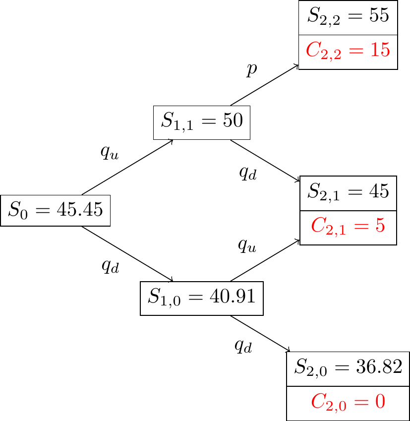

## Loading required package: timeDate## Loading required package: timeSeries## Loading required package: fBasicsIn this chapter we use the binomial tree framework to introduce the key concepts of option valuation.
Consider first a one-period model: An asset \(S_t\) is worth $40 at \(t=0\), and suppose that a month later, at \(t=T\), it will be either $45 or $35. We are interested in buying a call option struck at \(K=40\), expiring at \(T\). Interest rate is 1% per month. What is the fair price of this option?
The option payoff is
\[c_T = (S_T-K)^+ = \begin{cases} 5 & \text{if $S_T=45$}\\ 0 & \text{if $S_T=35$} \end{cases}\]
Now consider a portfolio made of one unit of stock and 2 call options:
\[\Phi = S - 2c\]
\[S_T - 2 c_T = \begin{cases} 35 & \text{if $S_T=45$}\\ 35 & \text{if $S_T=35$} \end{cases}\]
This portfolio is worth today the same as a bank deposit that would provide $35 in a month, or
\[\frac{35}{1 + 1\%} = 34.65\]
In this simple one-period economy, the option is thus worth:
\[c_o = \frac{40-34.65}{2} = 2.695\]
Consider again the one-period binomial model of the previous section, and introduce notation to characterize the value of the three assets of interest, today and in the two future states, labeled “Up” and “Down”. The notation is summarized in Table \[tab:binomial\].
| State | Stock | Bond | Call |
|---|---|---|---|
| Today | \(S_0\) | \(B_0\) | \(c_0\) |
| Up | \(S_T^u = S_0u\) | \((1+rT)B_0\) | \(c_T^u = (S_T^u - K)^+\) |
| Down | \(S_T^d = S_0d\) | \((1+rT)B_0\) | \(c_T^d = (S_T^d - K)^+\) |
Construct a risk-free portfolio made of the option and the stock:
\[\Pi_0 = c_0 - \Delta S_0\]
To be riskless, one must have:
\[\Pi_T = (1+rT) \Pi_0\]
In particular, this is true in the two scenarios for \(S_T\):
\[\begin{aligned} c_T^u - \Delta S_0u & = & (1+rT)(c_0 - \Delta S_0) \\ c_T^d - \Delta S_0d & = & (1+rT)(c_0 - \Delta S_0)\end{aligned}\]
Solve for \(\Delta\):
\[\Delta = \frac{c_T^u-c_T^d}{S_0(u-d)}\]
Set \((1+rT) = \rho\). The option value at time \(t=0\) is:
\[\begin{aligned} c_0 &=& \frac{1}{\rho} \Pi_T + \Delta S_0 \\ &=& \frac{1}{\rho} \left( \frac{\rho-d}{u-d} c_T^u + \frac{u-\rho}{u-d} c_T^d \right)\end{aligned}\]
Assume \(d<\rho<u\). and define:
\[\begin{aligned} q_u &=& \frac{\rho-d}{u-d} \\ q_d &=& \frac{u-\rho}{u-d}\end{aligned}\]
Rewrite:
\[c_0 = \frac{1}{\rho} \left(q_u c_T^u + q_d c_T^d \right) \tag{6.1}\]
One can observe that \(0<q_u, q_d<1\) and that \(q_u+q_d=1\), and therefore interpret \(q_u\) and \(q_d\) as probabilities associated with the events \({S_T=S_T^u}\) and \({S_T=S_T^d}\). Let \(Q\) be this probability measure. This leads us to write:
\[c_0 = \frac{1}{\rho} E^Q(c_T)\]
The option price is the discounted expected future payoff, under the probability \(Q\).
An alternative derivation of the same result can be obtained with Arrow-Debreu securities. Let’s first compute the price \(a_1\) and \(a_2\) of the two Arrow-Debreu securities in this economy. The price of the option will then be, by definition:
\[c_0 = a_1 c^u_T + a_2 c^d_T\]
where \(a_1\) and \(a_2\) are the prices of the Arrow-Debreu securities for the up and down scenarios.
Let’s now determine the prices of these Arrrow-Debreu securities. To do so, we construct a portfolio made of \(x\) units of stock and \(y\) units of bond, that has the same payoff as an Arrrow-Debreu security. Setting \(B_0 = 1\), the replicating portfolio for the first Arrow-Debreu security is obtained by solving the system:
\[\begin{pmatrix} S_0u & \rho \\ S_0d & \rho \end{pmatrix} \begin{pmatrix} x \\ y \end{pmatrix} = \begin{pmatrix} 1 \\ 0 \end{pmatrix}\]
Which yields:
\[x = \frac{1}{S_0(u-d)}, \ \ y = -\frac{d}{\rho(u-d)}\]
The price of the first Arrow-Debreu security is thus:
\[\begin{aligned} a_1 & = & x S_0 + y B_0 \\ & = & \frac{1}{\rho} \frac{\rho-d}{u-d}\end{aligned}\]
Similarly, the second Arrow-Debreu security is found to be worth:
\[a_2 = \frac{1}{\rho} \frac{\rho-u}{u-d}\]
and we obtain therefore the same option price as in (\[eq:cox-ross-1\])
The logic of the previous sections can be extented to multiple periods. When dealing with multiple periods, it is important in practice to construct recombining trees, i.e. trees where an up move followed by a down move results in the same state than a down move followed by a up move. \(N\) steps in a recombining tree generate \(N+1\) states, but \(2^N\) states in a non-recombining binomial tree.
The calculation process in a multi-period tree is best explained through an example. Consider a stock priced at 45.45€. At each period, the stock may appreciate or depreciate by \(10\%\). The riskless rate is \(5\%\), and we want to price a call option struck at 40€. The two-period tree is represented in figure ?? with stock price in black and the option exercise value in red.

The risk-neutral probabilities are identical at all nodes:
\[\begin{aligned} q_u &=& \frac{\rho-d}{u-d} = \frac{1.05-.9}{1.1-.9} = .75 \\ q_d &=& .25\end{aligned}\]
Using these values, the option value one step prior to expiry can be computed using ((6.1)):
\[\begin{aligned} C_{1,1} &=& \frac{1}{\rho}(q_u C_{2,2} + q_d C_{2,1}) = 11.90 \\ C_{1,0} &=& \frac{1}{\rho}(q_u C_{2,1} + q_d C_{2,0}) = 3.57 \\\end{aligned}\]
The reasoning that led to (\[eq:cox-ross-1\]) applies however to any node, and in particular to node (0,0). The option price at that node is thus:
\[C_{0,0} = \frac{1}{\rho}(q_u C_{1,1} + q_d C_{1,0}) = 9.35\]
The process is pictured in Figure ??.
American exercise refer to the right to exercise the option at any time before expiry. Clearly, an option with American exercise is worth more than the comparable option with European exercise. To price an American option, we introduce the notion of continuation value. The continuation value \(V^i_t\) at node \(i\) and time \(t\) is the option value, assuming that it will be exercised after time \(t\). At each step, one determines the optimal decision by comparing the value of an immediate exercise to the continuation value. The option value is therefore, for a call:
\[\begin{aligned} C^i_t &=& \max(S^i_t - K, V^i_t) \\ &=& \max(S^i_t-K, \frac{1}{\rho} (q_u C^{i+1}_{t+1} + q_d C^{i}_{t+1})) \end{aligned}\]
Starting from the data of the previous section, we now assume that the stock pays a dividend of 3 € in period 2. The modified tree is represented in figure ??.
We price an American call struck at 40€ in this tree. Exercise values in period 2 are computed as before, giving the following values:
\[\begin{aligned} C_{2,2} &=& 12 \\ C_{2,1} &=& 0 \\ C_{2,0} &=& 0 \end{aligned}\]
At period 1, the option holder determines the optimal policy: exercise immediately or hold the option until period 2. The resulting values are:
\[\begin{aligned} C_{1,1} &=& \max((50-40), \frac{1}{\rho} (q_u 10 + q_d 2)) = 10 \\ C_{1,0} &=& \max((40.91-40), \frac{1}{\rho} (q_u 2 + q_d 0)) = 1.42 \\\end{aligned}\]
The option value today is finally determined to be:
\[\begin{aligned} C_{0,0} &=& \max(5.45, \frac{1}{\rho} (q_u 10 + q_d 1.42)) \\ &=& 7.48\end{aligned}\]
Under the same conditions, a European option is worth \(C_{0,0} = 6.79\). The difference comes from the early exercise of the American option in node (1,1).
With interest rate assumed to be known, option prices are determined by the terms \(u\) and \(d\) that describe the binomial branching process. How should \(u\) and \(d\) be chosen?
The time interval \([0, T]\) is divided into \(N\) equal steps \([t_j , t_{j+1}]\) of length \(\Delta t\). Assume that the process for the underlying asset \(S_t\) is such that \(V_t = \ln(S_t/S_{t-\Delta t})\) are iid random variables with mean \(\mu \Delta t\) and variance \(\sigma^2 \Delta t\).
\[S_{t_j} = S_{t_{j-1}} e^{V_j}\]
Let’s determine \(u\) and \(d\) by matching the mean and variance of \(V_t\) and of the binomial process:
\[\begin{aligned} E(V_j) & = & p \ln u + (1-p) \ln d \\ & = & \mu \Delta t \\ V(V_j) & = & E(V_j^2) - E(V_j)^2 \\ & = & \sigma^2 \Delta t\end{aligned}\]
Which forms a system of 2 equations and three unknown. Without loss of generality, set \(p=1/2\), to obtain:
\[\begin{aligned} \frac{1}{2} (\ln u + \ln d) &=& \mu \Delta t \\ \frac{1}{4} (\ln u + \ln d)^2 &=& \sigma^2 \Delta t\end{aligned}\]
The solution is:
\[\begin{aligned} u &=& e^{\mu \Delta t + \sigma \sqrt{\Delta t}} \nonumber \\ d &=& e^{\mu \Delta t - \sigma \sqrt{\Delta t}} \tag{6.2}\end{aligned}\]
The corresponding value of the risk-neutral up probability, \(q_u\) is
\[q_u = \frac{e^{r\Delta t} - e^{\mu \Delta t - \sigma \sqrt{\Delta t}}}{e^{\mu \Delta t + \sigma \sqrt{\Delta t}} - e^{\mu \Delta t - \sigma \sqrt{\Delta t}}} \tag{6.3}\]
This is the single-period risk-neutral probability, not the objective probability \(p\). We next compute the limit of \(q_u\) as \(\Delta t \rightarrow 0\).
We use the following first order approximation:
\[\begin{aligned} e^{\mu \Delta t + \sigma \sqrt{\Delta t}} &=& (1+\mu \Delta t + \sigma \sqrt{\Delta t} + \frac{1}{2}(\mu \Delta t + \sigma \sqrt{\Delta t})^2 + \ldots \\ &=& 1+\mu \Delta t + \sigma \sqrt{\Delta t} + \frac{1}{2} \sigma^2 \Delta t + O(\Delta t^{3/2})\end{aligned}\]
and similarly,
\[e^{\mu \Delta t - \sigma \sqrt{\Delta t}} = 1+\mu \Delta t - \sigma \sqrt{\Delta t} + \frac{1}{2} \sigma^2 \Delta t + O(\Delta t^{3/2})\]
Combining these approximations with (\[eq:qu\]) yields,
\[\begin{aligned} q_u &=& \frac{\sigma \sqrt{\Delta t} + (r-\frac{1}{2} \sigma^2 - \mu) \Delta t + O(\Delta t ^{3/2})}{2 \sigma \sqrt{\Delta t} + O(\Delta t ^{3/2})} \nonumber \\ &=& \frac{1}{2} + \frac{r-\frac{1}{2} \sigma^2 - \mu}{2 \sigma} \sqrt{\Delta t} + O(\Delta t) \tag{6.4}\end{aligned}\]
Let’s now use these expressions for \(q_u\) to compute the mean and variance of \(V_j\).
\[E(V_j) = q_u \ln u + (1-q_u) \ln d\]
Use (\[eq:ud\]) to get:
\[E(V_j) = q_u (2\sigma\sqrt{\Delta t}) + \mu \Delta t - \sigma \sqrt{\Delta t}\]
Substitute \(q_u\) by its value (\[eq:qu\]) to get:
\[E(V_j) = (r-\frac{1}{2} \sigma^2) \Delta t + O(\Delta t ^{3/2})\]
Similarly,
\[Var(V_j) = \sigma^2 \Delta t + O(\Delta t^{3/2})\]
The remarkable point of this result is that \(\mu\) no longer appears.
Extending the reasoning of Section \[subsec:binomial\] to multiple periods, we write that under the risk neutral probability \(q_u, q_d\), the option value is the discounted expected value of the payoff:
\[\begin{aligned} P(S_0) &=& e^{-rT} E^Q(f(S_T)) \\ &=& e^{-rT} E^Q(f(S_0e^{\sum_{i=1}^N V_i})) \nonumber \tag{6.5}\end{aligned}\]
where \(f(S_T)\) is the payoff at expiry. We next need to compute the limit: \[\lim_{N\to\infty} \sum_{i=1}^N V_i\]
The variables \(V_i\) are a function of \(N\), thus the Central Limit Theorem cannot be used as such. However, we can invoke Lindeberg’s condition to obtain the same result:
(Lindeberg’s Condition) Let \(X_k, k \in N\) be independent variables with \(E(X_k)=\mu_k\) and \(V(X_k) = \sigma^2_k\). Let \(s_n^2 = \sum_i^n \sigma^2_i\). If the variables satisfy Lindeberg’s condition, then \[Z_n = \frac{\sum_{k=1}^n (X_k - \mu_k)}{s_n} \rightarrow N(0, 1)\]
To simplify notation, let \(E^Q(V_i) = a\), \(Var^Q(V_i) = b\), Lindeberg’s condition yields:
\[\frac{\sum_i^N V_i - Na }{b \sqrt{N}} \rightarrow N(0,1)\]
\[\frac{\sum_i^N V_i - Na }{b \sqrt{N}} = \frac{\sum_i^N V_i - (r-\frac{1}{2} \sigma^2)T + O(N^{-1/2}) }{\sigma \sqrt{T} + O(N^{-1/2})}\]
\[\frac{\sum_i^N V_i - (r-\frac{1}{2} \sigma^2)T}{\sigma \sqrt{T})} \rightarrow N(0,1)\]
Thus,
\[\sum_i^N V_i \rightarrow N \left( (r-\frac{1}{2} \sigma^2)T, \sigma^2 T \right)\]
Finally, as \(N \rightarrow \infty\), (\[eq:pso\]) becomes:
\[P(S_0) = \frac{e^{-rT}}{\sqrt{2\pi}} \int_{-\infty}^{\infty} f(S_0e^{(r-\frac{1}{2} \sigma^2)T + \sigma \sqrt{T}} e^{-\frac{1}{2} u^2} du\]
which is the Black-Scholes valuation formula, as derived by Cox, Ross, and Rubinstein (1979Cox, J C, Stephen A Ross, and Mark Rubinstein. 1979. “Option pricing: a simplified approach.” Journal of Financial Econometrics 7: 229–63.). Again, the significance of this result is that \(\mu\) does not appear in the formula.
We now use the result from the previous section to determine the geometry of the tree and the risk-neutral transition probabilities, consistent with the parameters of the diffusion process.
Recall from the previous section that \(u\) and \(d\) are defined by:
\[\begin{aligned} u &=& e^{\mu \Delta t + \sigma \sqrt{\Delta t}} \\ d &=& e^{\mu \Delta t - \sigma \sqrt{\Delta t}}\end{aligned}\]
Ultimately, \(\mu\) does not appear in the valuation formula, it can thus be set to an arbitrary value without loss of generality.
In the original CRR model, \(\mu = 0\), which leads to:
\[\begin{aligned} u &=& e^{\sigma \sqrt{t}} \\ d &=& e^{-\sigma \sqrt{t}} \\ q_u &=& \frac{e^{rt} - e^{-\sigma \sqrt{t}}}{e^{\sigma \sqrt{t}} - e^{-\sigma \sqrt{t}}}\end{aligned}\]
There are many other possibilities: a popular choice introduced by Jarrow and Rudd (1993Jarrow, Robert, and Andrew Rudd. 1993. Option pricing. Richard D. Irwin.) is to set \(\mu\) so that transition probabilities are equal to \(\frac{1}{2}\). Using (\[eq:qu-2\]), this involves setting \(\mu=r-\frac{1}{2}\sigma^2\), and the branching process is then: \[\begin{aligned} u &=& e^{(r-\frac{1}{2} \sigma^2)\Delta t + \sigma \sqrt{\Delta t}} \\ d &=& e^{(r-\frac{1}{2} \sigma^2)\Delta t -\sigma \sqrt{\Delta t}} \\ q_u &=& \frac{1}{2}\end{aligned}\]
There are many other possible choices, but no significant differences in the convergence rate to the Black-Scholes option value. Most of the models, however, suffer from a form of instability which is now described.